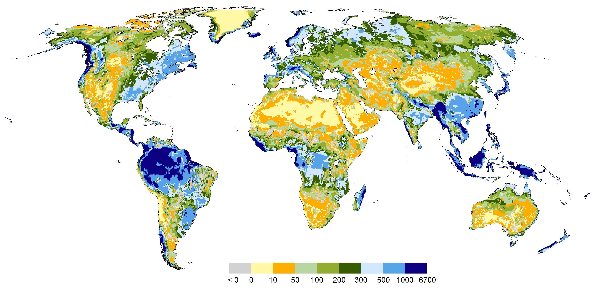
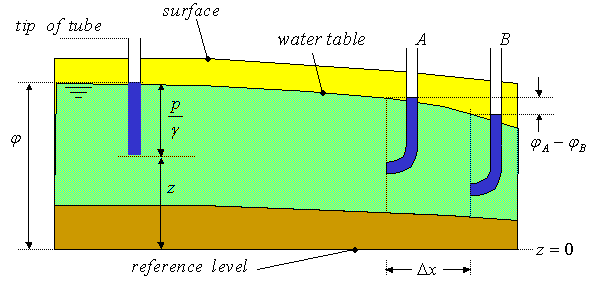
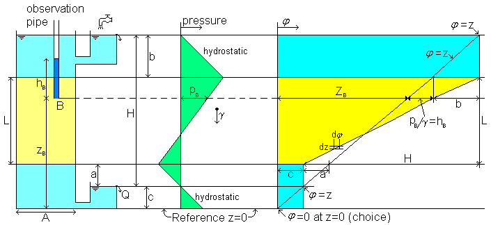
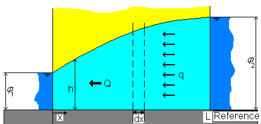
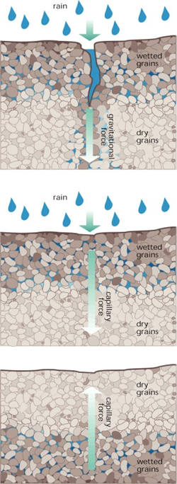
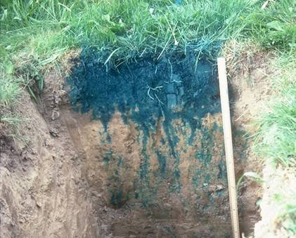
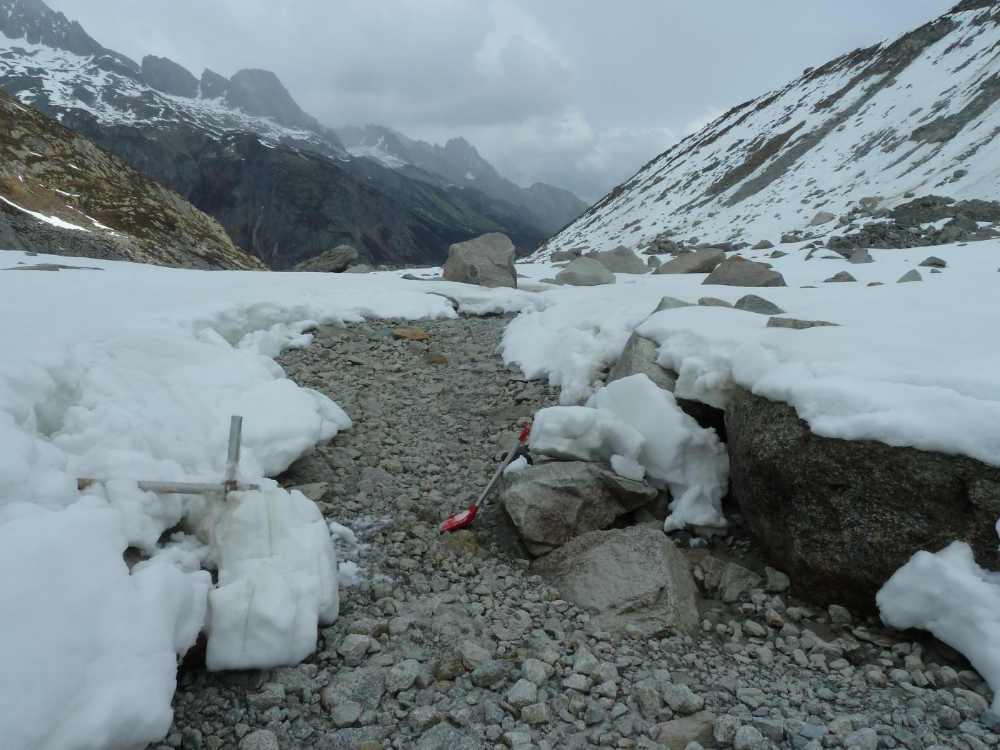

Vocabulary
Aquifer:
Geological formation capable of storing, transmitting and yielding exploitable quantities of water.
Groundwater:
Subsurface water occupying the saturated zone
Types of aquifers
What is an unconfined (or water table) aquifer? An aquifer whose upper water surface is the water table and is not under pressure
What is a perched aquifer? An unconfined aquifer that lies on top of an impermeable layer (confining unit)
What is an “artesian” or “confined” aquifer? An aquifer which holds water under pressure. Its piezometric surface can lie above the ground surface
Karst aquifers
World aquifers
Renewable freshwater resources

Renewable GW ressources
Typical aquifer residence times
Hydraulic head
Also called piezometric head, groundwater head Total head = elevation head + pressure head. Write its expression \(\phi = \frac{p}{\rho g}+z\)

 Darcy found \(Q = \frac{KAH}{L}\)
Darcy’s law
General formulation with \(q = Q/A\) the specific discharge (discharge \(Q\) per unit area \(A\) )
\[q = - K \nabla{\phi}\]
\(K\) the saturated hydraulic conductivity,
\(\nabla{\phi}\) is the hydraulic gradient (\(H/L\) in Darcy’s experiment)
Analogy to Fourier’s law
The heat flux density \(q\) in W/m2 (amount of energy that flows through a unit area per unit time) is:
\(q=-k{\nabla }T\) where:
\(q\) is the local heat flux density
\(k\) is the material’s conductivity in \(W/m/K\)
\(\nabla{T}\) is the temperature gradient in \(K/m\)
Analogy to Ohm’s Law
The current \(I\) through a resistor is:
\[I = \frac{V}{R}\]
where \(V\) is the voltage in volts (difference in electrical potential)
\(R\) is the resistance in ohms
Most aquifers are thin and quite flat. Which flow direction can we neglect? We can neglect vertical flow. Groundwater is hydrostatic (vertical equipotential lines)
Groundwater discharge is proportional to the depth of the aquifer
This is the Dupuit–Forchheimer assumption

Find Q as a function of \(K\) , L, \(\phi_1\) and \(\phi_2\)
Express Q as a function of h and q (flow per unit area) Use the conservation of mass across each \(dx\) slice of aquifer With the reference level as the base of the aquifer (\(\phi = h\) ), write Darcy’s Law Combine 2 and 3 We assume that K is uniform, integrate, and express \(h^2\) and \(h\) as a function of x, L, \(\phi_1\) and \(\phi_2\) Using steps 1 and 3, we want to express \(Q\) without \(x\) Finally we have: \(Q = -K\frac{(\phi_2^2-\phi_1^2)}{2L}\)
Typical saturated hydraulic conductivities
Cobble (64-256\(mm\) ): \(> 1 m/s\)
Gravel (2-63\(mm\) ): \(0.1 - 1 m/s\)
Sand (0.063\(mm\) - 2\(mm\) ): \(10^{-4} - 10^{-2} m/s\)
Silt (0.002-0.063\(mm\) ): \(10^{-5} - 10^{-8} m/s\)
Clay ( <0.002\(mm\) ): \(< 10^{-8} m/s\)
Signs of high water table / soil moisture
Signs of high water table / soil moisture
Surface ice forms in winter
First areas where snow disappears
Water loving plants: willows, thistles in my phd catchment…
Water in soils
Why does water up a straw? Surface tension of water
What is this phenomenon called? Capillarity
How do you think it could be related to water flow in soils? Movement of water through soils can be compared to a bunch of straws
Vocabulary
Matric potential (capillary potential, soil moisture tension):
Negative pressure (suction) to which water must be subjected in order to be in hydraulic equilibrium, through a porous permeable wall or membrane, with the water in the soil.
Field capacity:
Amount of water held in the soil after gravitational water has drained away.
Wilting point:
Moisture content of a soil that cannot be released by capillary forces
Unsaturated hydraulic conductivity
Darcy’s Law is applicable with specific values for unsaturated hydraulic conductivity
Soil (loam) is more conductive than sand when dry
Infiltration in soils

Green Ampt infiltration equation
\[i(t) = K\left[{\psi \,\Delta \theta \over F(t)}+1\right]\]
where \(i(t)\) is the infiltration rate
\(\psi\) the wetting front soil suction head (L)
\(\theta\) the water content (-)
\(K\) the saturated hydraulic conductivity (L/T)
\(F(t)\) the cumulative depth of infiltration (L)
Heterogeneity: flow through macropores

Heterogeneity: example from the field
Heterogeneity: longitudinal spread
Heterogeneity: perpendicular spread
Irrigation and soil water
What risks to the soil does irrigation present? (especially in arid regions) Soil salinization
Why does irrigation tend to lead to soil salinization? The solutes contained in irrigation water infiltrate into the soil but cannot reach the saturated zone if it is too deep. Meanwhile, water evaporates or is transpired by plants and leaves the solutes in the ground
Irrigation and soil water
How can this be reversed / mitigated? Drainage to evacuate salty water, preferably during wet season only
Some problematic examples of soil salinization? Ancient Mesopotamia, Aral sea catchment, Australia
Overland flow
Infiltration excess overland flow (also called Hortonian or unsaturated overland flow)Surface runoff when rainfall intensity exceeds the infiltration capacity
Runoff from urban surfaces is quickly “infiltration excess”
Can also happen in arid regions where soil infiltration is low due to surface sealing / crust
Saturation excess overland flow Surface runoff following full soil saturation
Depends on antecendent soil moisture
Typical after snowmelt in Norway
Runoff generation
Stream types
A stream which doesn’t have any baseflow contribution is called a : perennial streamb : intermittent streamc : ephemeral streamAnswer: c
Intermittent alpine stream

Stream / groundwater interactions
What is a “losing” and “gaining” reach? Losing reach: some water leaves to the stream to recharge the aquifer
Gaining reach: the aquifer recharges the stream
What is the most important soil zone that should be protected from pollution? The riparian zone
Why? Pollution is quickly mobilized in areas that are easily reached by alluvial groundwater
Take home messages
Various types of aquifers
Major aquifers present in arid regions
Darcy’s Law governs saturated flow
GW flow is proportional to hydraulic head gradient
In unsaturated soils, negative pressure is the result of capillary forces acting on curved air/water infterfaces
Soil water storage: porosity, field capacity, wilting point, residual water
Darcy’s Law also applicable in unsaturated media with lower K
Exercise: application of Darcy’s law
Conductivity of “Dyna Sand” sand filters
I found there that the loading rate of the filters was 3.5gpm/SqFt
Considering what you heard from Kristian, Check whether the drinking water facility is well dimensioned! The whole thing is done here without calculator with “useful” approximations! The reservoir was 1000\(m3\) and represented 6h max of daily consumption
So daily consumption: 4000m3
The sand filters need to be able to produce the daily consumption in 24h!
Conductivity of “Dyna Sand” sand filters
Calculate the required flow per minute 4000 / 60x24 = 4000 / 1440 -> 4000 / 1600 (easier) = 2.5\(m^3/min\)
Calculate the required surface for this flow 3.5\(gpm/SqFt\) -> 3.5x4 = 14 \(l/min/sqft\) -> 14x10 \(l/min/m^2\) = 0.14 \(m^3/min/m^2\)
Recapitulation: 2.5\(m^3/min\) is required and the sand filter has a capacity of 0.14 \(m^3/min/m^2\)
So 15-20\(m^2\) required: 5 filters of 3-4\(m^2\)
Makes sense!
Conductivity of “Dyna Sand” sand filters
The input hydraulic head was 10 bars, the sand thickness was 4m and the free water surface was about 1m higher (5m higher than the base of the filter). Calculate the hydraulic conductivity of the sand 10 bars makes 100m of head at the inlet
The free flowing water surface at the top of the filter is 5m higher, so 5m head in reference to the base of the filter
So hydraulic head gradient across the sand filter: 95 / 4 -> 24
using Darcy’s Law: \(q=-k \nabla{\phi}\)
\(K*24 = 0.14m^3/min/m^2\) -> \(K = \frac{2.3*10^{-3}}{24} = 10^{-4} m/s\) Makes sense!
Book chapters
Elements of physical hydrology. Chapters 2, 6, 7, 8
Hydrology in Practice. Chapers 2, 3, 4, 5, 7, 9, 11
Physical aquifer model
VIDEO
33: Natural pollution in sweden. influence of depth to water table riparian controls are the place to begin when looking at water quality in streams start simple and then see what we have to explain afterwards.